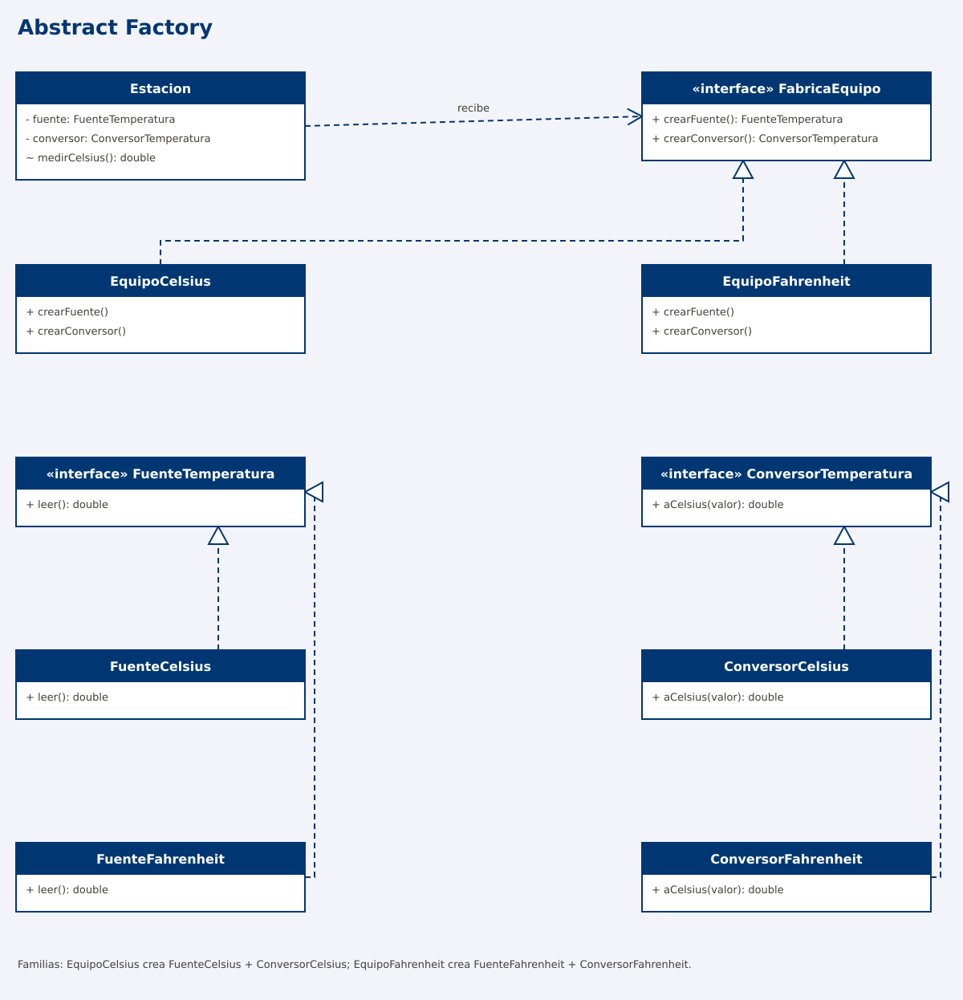
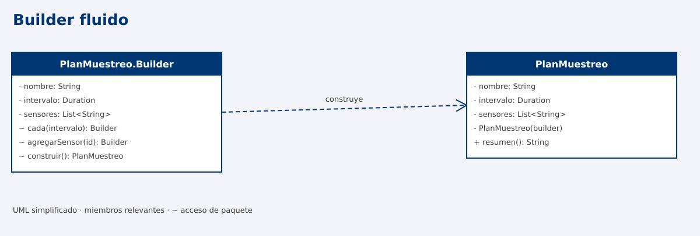
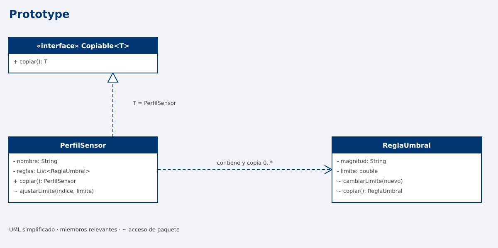
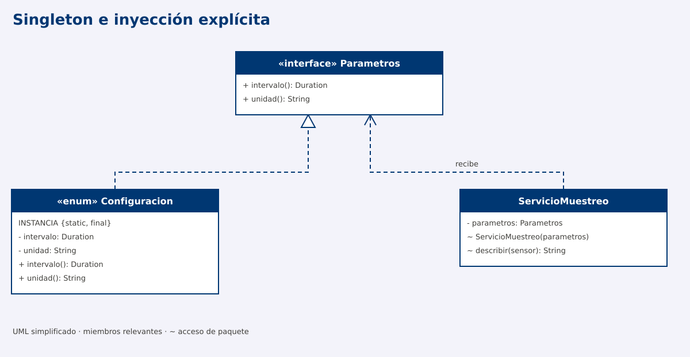

Programación Aplicada
1.4a. Patrones creacionales

Autor: Ing. Pablo Torres, Mgtr.
Unidad: 1. Programación genérica
Los patrones creacionales organizan la construcción, selección o reutilización de objetos. Cada patrón resuelve una variación diferente: el tipo concreto que se crea, la familia a la que pertenece, sus etapas de configuración, la copia de un estado existente o el control de una instancia compartida.
Índice
- Fundamentos
- Factory Method · Seleccionar un lector de datos
- Abstract Factory · Crear equipos compatibles
- Builder · Configurar un plan de muestreo
- Prototype · Copiar perfiles de sensores
- Singleton · Compartir una configuración
- Comparación y criterios de elección
- Referencias
1. Fundamentos
Un patrón de diseño describe una organización de responsabilidades y colaboraciones que resuelve un problema recurrente bajo determinadas condiciones. No es una clase lista para copiar ni una obligación de introducir interfaces en cualquier programa.
Acoplamiento es el grado de dependencia entre componentes. Si un servicio decide qué implementación construir, conoce su constructor y también la usa, cambiar esa implementación puede afectar varias partes del servicio. Una abstracción estable permite separar estas decisiones, a cambio de más tipos y relaciones.
Producto es el objeto que se obtiene; creador es el componente que lo suministra; cliente es quien lo utiliza. Estos nombres describen roles: un mismo objeto puede desempeñar más de uno. La creación concreta sigue necesitando constructores o mecanismos equivalentes; el patrón establece dónde reside esa decisión.
Los patrones no requieren genéricos. Estos pueden reforzar contratos de tipos, como Copiable<PerfilSensor>, pero añadir <T> no convierte por sí solo una clase en un patrón.
2. Factory Method
Definición
Factory Method es un patrón de diseño creacional que define un método para crear objetos y permite que las subclases decidan qué clase concreta instanciar.
La clase base declara el método de creación y puede utilizar el objeto resultante dentro de sus operaciones. Las subclases implementan o sobrescriben ese método para proporcionar diferentes productos.
Idea principal: separar la creación de un objeto de las operaciones que lo utilizan, permitiendo cambiar el producto mediante herencia y polimorfismo [1].
2.1. ¿Qué problema resuelve?
Supongamos que una aplicación realiza un proceso que necesita utilizar objetos de diferentes clases.
Una implementación podría crear directamente esos objetos mediante new y seleccionar su tipo con condiciones if o switch.
Esto provoca que el proceso dependa de clases concretas. Cuando aparecen nuevas variantes, puede ser necesario modificar la lógica existente.
Factory Method propone:
- Definir una abstracción común para los productos.
- Declarar un método de creación en una clase creadora.
- Delegar en las subclases la elección del producto concreto.
- Utilizar el producto mediante su abstracción, sin depender de una implementación específica.
El patrón no elimina la necesidad de seleccionar una implementación concreta. Traslada esa decisión a los creadores concretos.
2.2. Estructura y participantes
| Participante | Responsabilidad |
|---|---|
| Producto | Interfaz o clase abstracta que define las operaciones disponibles. |
| Producto concreto | Implementa las operaciones del producto. |
| Creador | Declara el Factory Method y puede contener operaciones que utilizan el producto. |
| Creador concreto | Sobrescribe el Factory Method para devolver el producto correspondiente. |
| Cliente | Selecciona el creador que necesita y utiliza sus operaciones. |
El Factory Method es el método de creación, no necesariamente toda la clase creadora.
2.3. ¿Cuándo utilizarlo?
Conviene utilizar Factory Method cuando:
- Un proceso necesita trabajar con diferentes implementaciones de un producto.
- Se desea conservar un procedimiento común y variar el objeto que utiliza.
- Las subclases deben decidir qué producto crear.
- Se prevé incorporar nuevas variantes sin modificar el algoritmo compartido.
No siempre es necesario. Si existe una única implementación estable, agregar jerarquías de creadores y productos podría aumentar innecesariamente la complejidad.
2.4. Caso práctico: importación de lecturas
En CampusMonitor necesitamos importar lecturas de sensores desde diferentes formatos.
Cada lectura contiene:
- Identificador del sensor.
- Valor numérico.
- Unidad de medida.
Se reciben dos formatos:
Formato separado por punto y coma:
S01;22.5;°C
S02;18;personas
Formato separado por tabulaciones:
S01 22.5 °C
S02 18 personas
Independientemente del formato, el proceso debe:
- Recorrer las líneas recibidas.
- Omitir las líneas vacías.
- Interpretar los datos.
- Validar las lecturas.
- Identificar los errores indicando el número de línea.
- Devolver una lista de objetos
Lectura.
Problema: el procedimiento de importación es el mismo, pero cambia la forma de interpretar los campos.
Si duplicamos el proceso para cada formato, repetimos el recorrido, la validación del flujo y el manejo de errores.
Solución mediante Factory Method: conservar el proceso en Importador y delegar la creación del lector específico a sus subclases.
2.5. Estructura UML

Identificación de participantes
| Rol del patrón | Implementación en CampusMonitor |
|---|---|
| Producto | LectorLinea |
| Productos concretos | LectorPuntoComa, LectorTabulacion |
| Creador | Importador |
| Creadores concretos | ImportadorPuntoComa, ImportadorTabulacion |
| Factory Method | crearLector() |
La clase Lectura representa los datos obtenidos, pero no es el producto del Factory Method.
El producto del patrón es el objeto LectorLinea, que se utiliza para obtener las lecturas.
2.6. Implementación del ejemplo en Java
Código de referencia: FactoryMethodDemo.java.
El archivo contiene una demostración ejecutable con las clases agrupadas. Para desarrollar el ejercicio en un proyecto Java, se recomienda distribuirlas en archivos independientes.
Clases necesarias
| Clase | Tipo | Responsabilidad |
|---|---|---|
Lectura |
Record | Almacenar y validar los datos de una lectura. |
LectorLinea |
Interfaz | Declarar leer(String linea), que recibe texto y devuelve una Lectura. |
LectorPuntoComa |
Clase concreta | Interpretar líneas separadas por ;. |
LectorTabulacion |
Clase concreta | Interpretar líneas separadas por tabulaciones. |
Importador |
Clase abstracta | Mantener el proceso común y declarar crearLector(). |
ImportadorPuntoComa |
Creador concreto | Devolver un LectorPuntoComa. |
ImportadorTabulacion |
Creador concreto | Devolver un LectorTabulacion. |
FactoryMethodDemo |
Clase ejecutable | Probar los diferentes importadores mediante main(). |
Consideraciones de implementación:
Importadordeclaraprotected abstract LectorLinea crearLector().- Cada creador concreto sobrescribe
crearLector()y devuelve su lector correspondiente. importar()contiene el algoritmo común y esfinalen este ejemplo.- Los lectores implementan el método
leer()definido por la interfaz. - El método auxiliar
interpretar()permite reutilizar la separación y validación de campos. No constituye el Factory Method.
El lector se crea una vez por importación y se reutiliza para procesar las líneas recibidas.
2.7. ¿Cómo se utiliza el patrón?
El cliente selecciona un importador concreto y ejecuta el proceso común.
Importador importador = new ImportadorPuntoComa();
List<Lectura> resultado = importador.importar(
List.of("S01;22.5;°C", "S02;18;personas")
);
System.out.println(resultado);
Flujo de ejecución
- El cliente instancia un creador concreto, por ejemplo
ImportadorPuntoComa. - Invoca el método heredado
importar(lineas). ImportadorejecutacrearLector()mediante polimorfismo.- La subclase devuelve el lector correspondiente.
Importadorutilizalector.leer(linea)para procesar cada registro.- El resultado se devuelve como una lista de objetos
Lectura.
Para utilizar otro formato, el cliente selecciona otro creador:
Importador importador = new ImportadorTabulacion();
Observación: cambia el creador y, por tanto, el lector utilizado. El algoritmo importar() permanece sin modificaciones.
2.8. Resultado de la ejecución
[Lectura[idSensor=S01, valor=22.5, unidad=°C]]
[Lectura[idSensor=S02, valor=18.0, unidad=personas]]
Línea 1: Lectura inválida
Las dos importaciones utilizan el mismo procedimiento con lectores diferentes.
El tercer resultado corresponde a una lectura con valor NaN. Aunque Java puede convertirlo a double, el constructor de Lectura lo rechaza porque no es un valor finito.
Importador incorpora el número de línea al mensaje de error.
2.9. Análisis
Preguntas:
- ¿Por qué
crearLector()devuelveLectorLineaen lugar de una clase concreta? - ¿Cuál es la diferencia entre
crearLector()eimportar()? - ¿Qué mecanismo de programación orientada a objetos permite ejecutar la implementación correspondiente de
crearLector()? - ¿Qué clases serían necesarias para incorporar un tercer formato separado por comas?
- ¿Por qué el método
importar()no necesita condiciones para identificar el formato?
Limitaciones del ejemplo:
- Las líneas vacías se omiten.
- Los datos inválidos generan excepciones con su número de línea.
- No se admiten delimitadores escapados ni campos entre comillas.
- Se presupone una lista de entrada no nula con elementos no nulos.
Conclusión: Factory Method permite que un proceso trabaje con diferentes productos mediante una abstracción común, delegando en las subclases la creación de la implementación correspondiente.
3. Abstract Factory · Crear equipos compatibles
Definición
Abstract Factory ofrece operaciones para obtener varios tipos de productos de una misma familia. El cliente trabaja con las interfaces de fábrica y productos; cada fábrica concreta suministra una variante coordinada [2].
Problema: una fuente debe corresponder a su conversor
Una estación utiliza una fuente de temperatura y un conversor a Celsius. Un equipo entrega Celsius; otro entrega Fahrenheit. Mezclar una fuente Fahrenheit con el conversor de Celsius no causa necesariamente un error de tipos: ambos intercambian double, pero el resultado sería físicamente incorrecto.
No se necesita elegir solo un objeto. Se necesita elegir un conjunto coherente de colaboradores. La unidad no está representada en el tipo double, por lo que la composición correcta importa.
Solución y participantes
FabricaEquipo entrega una FuenteTemperatura y un ConversorTemperatura. Estacion recibe una fábrica y obtiene ambos productos de ella.
| Familia | Fuente concreta | Conversor concreto |
|---|---|---|
| Celsius | FuenteCelsius |
ConversorCelsius |
| Fahrenheit | FuenteFahrenheit |
ConversorFahrenheit |
Los dos contratos de producto son distintos: la fuente obtiene una muestra y el conversor interpreta su escala. EquipoCelsius y EquipoFahrenheit implementan la fábrica. Estacion es el cliente y no pregunta qué clase concreta recibió.
Decisiones de implementación
Las fuentes devuelven muestras fijas para probar la composición. La transformación Fahrenheit–Celsius sí se calcula. Una implementación conectada a hardware sustituiría la fuente y definiría su gestión de recursos, tiempos de espera y errores de lectura.
La familia es una garantía del diseño de cada fábrica, no una propiedad que Java verifique automáticamente aquí. Una fábrica mal implementada podría mezclar productos. Por eso se comprueba que 77 °F se interpreten como 25 °C. Con dominios más estrictos se pueden representar las unidades mediante tipos específicos.
Cuándo utilizarlo
Conviene cuando cambia un conjunto de componentes relacionados: proveedor, protocolo, plataforma o familia de equipos. Añadir una familia Kelvin requeriría su fuente, conversor y fábrica; Estacion seguiría usando los mismos contratos. Añadir un nuevo tipo de producto, como un calibrador, exigiría modificar la interfaz de fábrica y todas sus implementaciones.
La diferencia con Factory Method es el eje de variación. Allí un creador especializa una operación de construcción dentro de un proceso. Aquí un cliente recibe un objeto fábrica que suministra varios productos coordinados. Ambos patrones pueden coexistir, pero no son sinónimos.
Estructura UML

Fuente editable del diagrama. El dibujo omite los contenedores externos *Demo y algunas operaciones auxiliares.
Implementación Java comentada
Archivo: AbstractFactoryDemo.java.
package edu.ups.pap.u01.patrones.creacionales;
import java.util.Locale;
import java.util.Objects;
/** Crea una fuente y un conversor compatibles como una sola familia. */
public class AbstractFactoryDemo {
interface FuenteTemperatura { double leer(); }
interface ConversorTemperatura { double aCelsius(double valor); }
/** Fábrica abstracta: dos tipos de producto que deben trabajar juntos. */
interface FabricaEquipo {
FuenteTemperatura crearFuente();
ConversorTemperatura crearConversor();
}
// Fuentes simuladas: permiten probar las conversiones sin hardware.
static final class FuenteCelsius implements FuenteTemperatura {
@Override
public double leer() { return 25.0; }
}
static final class FuenteFahrenheit implements FuenteTemperatura {
@Override
public double leer() { return 77.0; }
}
static final class ConversorCelsius implements ConversorTemperatura {
@Override
public double aCelsius(double valor) { return valor; }
}
static final class ConversorFahrenheit implements ConversorTemperatura {
@Override
public double aCelsius(double valor) { return (valor - 32) * 5.0 / 9.0; }
}
static final class EquipoCelsius implements FabricaEquipo {
@Override
public FuenteTemperatura crearFuente() { return new FuenteCelsius(); }
@Override
public ConversorTemperatura crearConversor() { return new ConversorCelsius(); }
}
static final class EquipoFahrenheit implements FabricaEquipo {
@Override
public FuenteTemperatura crearFuente() { return new FuenteFahrenheit(); }
@Override
public ConversorTemperatura crearConversor() { return new ConversorFahrenheit(); }
}
/** Cliente: solo obtiene los productos mediante una misma fábrica. */
static final class Estacion {
private final FuenteTemperatura fuente;
private final ConversorTemperatura conversor;
Estacion(FabricaEquipo fabrica) {
Objects.requireNonNull(fabrica, "Fábrica obligatoria");
fuente = Objects.requireNonNull(fabrica.crearFuente());
conversor = Objects.requireNonNull(fabrica.crearConversor());
}
double medirCelsius() {
double valor = conversor.aCelsius(fuente.leer());
if (!Double.isFinite(valor)) {
throw new IllegalStateException("Medición no finita");
}
return valor;
}
}
public static void main(String[] args) {
Estacion local = new Estacion(new EquipoCelsius());
Estacion importada = new Estacion(new EquipoFahrenheit());
System.out.printf(Locale.ROOT, "Equipo Celsius: %.1f °C%n", local.medirCelsius());
System.out.printf(Locale.ROOT, "Equipo Fahrenheit: %.1f °C%n", importada.medirCelsius());
// Si se mezclara FuenteFahrenheit con ConversorCelsius,
// 77 °F se interpretarían incorrectamente como 77 °C.
}
}
Salida y lectura de la ejecución
Equipo Celsius: 25.0 °C
Equipo Fahrenheit: 25.0 °C
Los equipos proporcionan muestras distintas: 25.0 y 77.0. Las estaciones publican el mismo resultado porque cada fuente está asociada a su conversor. El cliente realiza fuente.leer() y después conversor.aCelsius(...); no selecciona la fórmula con un condicional.
El punto de cambio es la fábrica entregada al constructor. Esta recibe la responsabilidad de componer la familia completa.
Comprobaciones y límites del ejemplo
- Ambas familias deben devolver
25.0 °Ccon las muestras del ejemplo. - Al crear
Estacioncon una fábrica nula se rechaza la construcción. - Si una fuente devuelve un valor no finito,
medirCelsiuslo rechaza. - Las fuentes son simuladas; la salida no demuestra comunicación real con un dispositivo.
- Probar cada familia es indispensable: la interfaz común no detecta una fórmula o una pareja de productos equivocadas.
4. Builder · Configurar un plan de muestreo
Definición
Builder separa la preparación progresiva de un producto de su obtención final. Acumula decisiones de construcción y entrega el objeto cuando se cumplen sus condiciones. En el diseño clásico puede existir un director que ordena pasos y varios builders que producen representaciones diferentes [3].
Problema: configuraciones parcialmente válidas
Un plan de muestreo necesita nombre, intervalo y sensores. Crear el plan con un constructor vacío y agregar datos después permite que otros componentes reciban un plan incompleto. Un constructor con numerosas opciones, por otra parte, resulta difícil de leer y extender.
La necesidad no es elegir una subclase: es reunir y validar una configuración antes de publicarla. El plan debe contener al menos un sensor y un intervalo mínimo de un segundo; los identificadores no pueden repetirse.
Solución y participantes
El builder conserva el estado provisional. Los métodos cada() y agregarSensor() lo configuran; construir() verifica las condiciones finales y crea PlanMuestreo.
| Rol | Tipo u operación | Responsabilidad |
|---|---|---|
| Producto | PlanMuestreo |
Mantener el plan construido |
| Builder concreto | PlanMuestreo.Builder |
Reunir nombre, intervalo y sensores |
| Etapas | cada, agregarSensor |
Configurar opciones legibles |
| Terminación | construir |
Validar y crear el producto |
| Cliente | main |
Elegir los pasos y solicitar el resultado |
Variante fluida y director
El ejemplo utiliza la variante builder fluido: cada etapa devuelve this para encadenar llamadas. Encadenar métodos no es suficiente para demostrar Builder; aquí existe además un producto separado que se obtiene al finalizar. No se necesita una interfaz de builder porque solo se construye una representación.
Un director sería una clase que conoce recetas repetidas, por ejemplo un plan de laboratorio con intervalo de diez segundos y sensores predeterminados. Usaría las operaciones del builder sin asumir su almacenamiento interno. Solo tendría sentido incorporarlo si esas secuencias se reutilizan. El ejemplo conserva esa responsabilidad en main.
Inmutabilidad y validación
El builder es mutable y se puede reutilizar. El producto mantiene campos final, usa tipos inmutables para nombre e intervalo y copia la lista mediante List.copyOf. Como los elementos son cadenas inmutables, no hace falta duplicarlos. Cambiar el builder no modifica un plan ya construido.
Se valida el identificador al agregarlo y las condiciones globales al construir. El constructor del producto es privado para evitar que otros clientes omitan este proceso. Que una clase se construya con Builder no garantiza por sí mismo que sea inmutable.
Cuándo utilizarlo
Es útil con opciones, valores predeterminados y restricciones conjuntas. Para una lectura de solo tres campos obligatorios puede bastar un constructor o un record validado. El costo consiste en mantener otro objeto mutable y una API de configuración. El builder del ejemplo no está diseñado para compartirse entre hilos.
Estructura UML

Fuente editable del diagrama. El dibujo omite los contenedores externos *Demo y algunas operaciones auxiliares.
Implementación Java comentada
Archivo: BuilderDemo.java.
package edu.ups.pap.u01.patrones.creacionales;
import java.time.Duration;
import java.util.ArrayList;
import java.util.List;
import java.util.Objects;
/** Construye una configuración válida antes de entregarla al servicio. */
public class BuilderDemo {
static final class PlanMuestreo {
private final String nombre;
private final Duration intervalo;
private final List<String> sensores;
private PlanMuestreo(Builder builder) {
nombre = builder.nombre;
intervalo = builder.intervalo;
sensores = List.copyOf(builder.sensores); // Copia defensiva.
}
public String resumen() {
return nombre + " | " + intervalo.toSeconds() + " s | " + sensores;
}
/** Builder mutable: todavía no representa un plan ejecutable. */
static final class Builder {
private final String nombre;
private Duration intervalo = Duration.ofSeconds(30);
private final List<String> sensores = new ArrayList<>();
Builder(String nombre) {
if (nombre == null || nombre.isBlank()) {
throw new IllegalArgumentException("Nombre obligatorio");
}
this.nombre = nombre;
}
Builder cada(Duration intervalo) {
this.intervalo = Objects.requireNonNull(intervalo);
return this;
}
Builder agregarSensor(String id) {
if (id == null || id.isBlank()) {
throw new IllegalArgumentException("Identificador obligatorio");
}
if (sensores.contains(id)) {
throw new IllegalArgumentException("Sensor duplicado: " + id);
}
sensores.add(id);
return this;
}
PlanMuestreo construir() {
// Invariantes del producto: no se entrega un plan incompleto.
if (intervalo.compareTo(Duration.ofSeconds(1)) < 0) {
throw new IllegalArgumentException("Intervalo mínimo: 1 segundo");
}
if (sensores.isEmpty()) {
throw new IllegalArgumentException("Agrega al menos un sensor");
}
return new PlanMuestreo(this);
}
}
}
public static void main(String[] args) {
PlanMuestreo.Builder builder = new PlanMuestreo.Builder("Laboratorio")
.cada(Duration.ofSeconds(10)).agregarSensor("S01");
PlanMuestreo primero = builder.construir();
PlanMuestreo segundo = builder.agregarSensor("S02").construir();
// Reutilizar el builder no cambia el producto que ya fue creado.
System.out.println(primero.resumen());
System.out.println(segundo.resumen());
try {
new PlanMuestreo.Builder("Vacío").construir();
} catch (IllegalArgumentException error) {
System.out.println(error.getMessage());
}
}
}
Salida y lectura de la ejecución
Laboratorio | 10 s | [S01]
Laboratorio | 10 s | [S01, S02]
Agrega al menos un sensor
El primer plan contiene únicamente S01. Después se agrega S02 al builder y se construye otro plan. La primera salida conserva su contenido, lo que demuestra la separación del producto respecto al estado provisional.
La tercera salida corresponde a un intento de construir sin sensores. No se devuelve un plan inválido para que otra clase lo corrija posteriormente.
Comprobaciones y límites del ejemplo
- Agregar dos veces
S01debe producir un error de identificador duplicado. - Un intervalo menor que un segundo debe impedir la construcción.
- Omitir
cada()utiliza el valor predeterminado de treinta segundos. - Un plan ya construido debe permanecer igual después de reutilizar su builder.
- La demostración construye configuración; no inicia un temporizador ni ejecuta tareas periódicas.
5. Prototype · Copiar perfiles de sensores
Definición
Prototype permite crear un objeto a partir de otro previamente configurado mediante una operación de copia. El tipo que posee el estado define cómo duplicarlo; el cliente solicita la copia sin reconstruir cada detalle de su configuración [4].
Problema: personalizar una configuración existente
Un perfil contiene reglas para temperatura y humedad. Varios laboratorios parten de un perfil aprobado, pero algunos necesitan cambiar un umbral. Reconstruir las reglas en cada cliente duplica valores predeterminados. Asignar copia = original, en cambio, comparte el mismo perfil: modificar uno modifica lo observado por el otro.
La solución debe crear un perfil distinto y también independizar sus reglas mutables. Copiar solo la lista no basta si sus elementos siguen siendo los mismos objetos.
Solución y participantes
Copiable<T> declara la operación. PerfilSensor implementa Copiable<PerfilSensor> y crea una copia de sí mismo. ReglaUmbral conoce cómo duplicar su magnitud y límite. El cliente modifica únicamente el resultado de copiar().
| Elemento | Decisión de copia |
|---|---|
Objeto PerfilSensor |
Crear una instancia nueva |
| Lista de reglas | Crear una lista nueva |
Cada ReglaUmbral |
Crear un objeto nuevo porque su límite es mutable |
| Cadenas de nombre y magnitud | Compartir referencias porque son inmutables |
Límite double |
Copiar el valor primitivo |
Copia superficial y profunda
Una copia superficial duplica el contenedor, pero conserva referencias a objetos internos. Una copia profunda duplica también el estado mutable que debe ser independiente. El alcance debe definirse para cada modelo: no significa copiar indiscriminadamente todo lo alcanzable desde un objeto.
En este caso el grafo es simple: perfil, lista y reglas. copiar() duplica cada regla, por lo que cambiar el límite de la copia no altera el original. No se usa Cloneable ni Object.clone(); un método explícito permite expresar y verificar mejor este contrato.
Identidad, recursos y registros de prototipos
Copiar una plantilla no debe interpretarse automáticamente como duplicar la identidad de una entidad persistida. En otro modelo, un identificador de base de datos podría necesitar regenerarse. Tampoco se deberían copiar directamente conexiones, archivos abiertos o hilos.
Un registro de prototipos puede mantener perfiles por nombre y devolver perfil.copiar() cuando se solicita una variante. Ese registro no es obligatorio y no aparece en el ejemplo: primero se demuestra la independencia de la copia sin añadir otra responsabilidad.
Cuándo utilizarlo
Conviene cuando la configuración inicial es extensa, se modifica a partir de plantillas o el cliente no debe conocer todos los detalles de construcción. Su principal costo es especificar y mantener la política de copia. Añadir un nuevo atributo mutable obliga a revisar copiar(). Para este perfil, copiar n reglas requiere tiempo y espacio adicionales O(n).
Estructura UML

Fuente editable del diagrama. El dibujo omite los contenedores externos *Demo y algunas operaciones auxiliares.
Implementación Java comentada
Archivo: PrototypeDemo.java.
package edu.ups.pap.u01.patrones.creacionales;
import java.util.ArrayList;
import java.util.List;
/** Duplica un perfil y sus reglas mutables para configurarlos por separado. */
public class PrototypeDemo {
interface Copiable<T> { T copiar(); }
static final class ReglaUmbral {
private final String magnitud;
private double limite;
ReglaUmbral(String magnitud, double limite) {
if (magnitud == null || magnitud.isBlank()) {
throw new IllegalArgumentException("Magnitud obligatoria");
}
this.magnitud = magnitud;
cambiarLimite(limite);
}
void cambiarLimite(double nuevo) {
if (!Double.isFinite(nuevo)) {
throw new IllegalArgumentException("Límite no finito");
}
limite = nuevo;
}
ReglaUmbral copiar() { return new ReglaUmbral(magnitud, limite); }
@Override
public String toString() { return magnitud + " > " + limite; }
}
static final class PerfilSensor implements Copiable<PerfilSensor> {
private String nombre;
private final List<ReglaUmbral> reglas = new ArrayList<>();
PerfilSensor(String nombre) { renombrar(nombre); }
void renombrar(String nuevo) {
if (nuevo == null || nuevo.isBlank()) {
throw new IllegalArgumentException("Nombre obligatorio");
}
nombre = nuevo;
}
void agregarRegla(String magnitud, double limite) {
reglas.add(new ReglaUmbral(magnitud, limite));
}
void ajustarLimite(int indice, double limite) {
reglas.get(indice).cambiarLimite(limite);
}
@Override
public PerfilSensor copiar() {
PerfilSensor copia = new PerfilSensor(nombre);
// No basta new ArrayList<>(reglas): compartiría las reglas mutables.
for (ReglaUmbral regla : reglas) {
copia.reglas.add(regla.copiar());
}
return copia;
}
@Override
public String toString() { return nombre + ": " + reglas; }
}
public static void main(String[] args) {
PerfilSensor base = new PerfilSensor("Base");
base.agregarRegla("temperatura", 28.0);
base.agregarRegla("humedad", 70.0);
// El cliente no reconstruye la configuración de cada regla.
PerfilSensor laboratorio = base.copiar();
laboratorio.renombrar("Laboratorio");
laboratorio.ajustarLimite(0, 25.0);
System.out.println(base);
System.out.println(laboratorio);
System.out.println("Mismo perfil: " + (base == laboratorio));
}
}
Salida y lectura de la ejecución
Base: [temperatura > 28.0, humedad > 70.0]
Laboratorio: [temperatura > 25.0, humedad > 70.0]
Mismo perfil: false
El perfil del laboratorio reduce el límite de temperatura a 25.0; el original conserva 28.0. Ambos mantienen la regla de humedad. La comparación de referencias confirma que son perfiles distintos, pero esa comparación por sí sola no probaría una copia profunda: la evidencia decisiva es cambiar una regla interna y comprobar que la original no cambió.
Comprobaciones y límites del ejemplo
- Cambiar una regla de la copia no debe modificar la misma posición del original.
- Agregar otra regla a la copia tampoco debe cambiar el tamaño de la lista original.
- Los límites deben ser finitos. Un índice fuera del rango produce la excepción de la lista.
- El ejemplo copia configuración, no mide sensores ni ejecuta las reglas.
- Esta política está definida para estos campos; un grafo con ciclos o referencias compartidas requeriría una estrategia adicional.
6. Singleton · Compartir una configuración
Definición
Singleton restringe la disponibilidad de una clase a una única instancia dentro de un ámbito y proporciona un punto de acceso a ella. La intención combina control de creación y acceso compartido; no convierte automáticamente el estado en inmutable ni seguro frente a concurrencia [5].
Problema: una configuración común
Varios servicios necesitan conocer el intervalo predeterminado y la unidad de medida. Si cada servicio crea o modifica una configuración distinta, las decisiones pueden divergir. Se quiere compartir una configuración estable, manteniendo la posibilidad de probar el servicio con otros parámetros.
Antes de aplicar el patrón hay que distinguir dos necesidades: compartir un objeto y prohibir múltiples instancias de una clase. La primera suele resolverse creando una instancia al inicio y pasándola por constructor. Singleton añade una restricción más fuerte y un punto de acceso global.
Solución y participantes
Configuracion es un enum con una sola constante, INSTANCIA. Sus datos son inmutables. ServicioMuestreo recibe el contrato Parametros, no consulta internamente el acceso global. El punto de composición, main, decide entregarle la configuración compartida o una implementación de prueba.
| Rol | Tipo u operación | Responsabilidad |
|---|---|---|
| Singleton | Configuracion |
Exponer su única constante y sus valores |
| Acceso | Configuracion.INSTANCIA |
Obtener la referencia compartida |
| Contrato de consumo | Parametros |
Declarar lo que necesita el servicio |
| Cliente | ServicioMuestreo |
Utilizar parámetros recibidos explícitamente |
Variante Java y alcance
La constante se inicializa al inicializarse su clase. El cliente no puede invocar un constructor de enum con new. La variante evita implementar manualmente un acceso con comprobaciones de null y bloqueos. No necesita un método llamado getInstance() para representar el patrón.
La unicidad corresponde a esa clase cargada. Otra JVM o una copia de la clase cargada por otro cargador puede tener su propia instancia; no hay coordinación distribuida. Si se añadieran colecciones mutables o contadores, habría que diseñar su sincronización aunque la instancia se inicialice correctamente.
Dependencias y pruebas
Una llamada a Configuracion.INSTANCIA dentro de cada servicio oculta el origen de los parámetros y dificulta sustituirlos. Recibir Parametros por constructor hace visible la dependencia. El ejemplo usa Singleton en la composición y composición explícita en el consumidor: son decisiones compatibles.
La implementación alternativa de Parametros no es otra instancia de Configuracion; es un objeto de prueba que cumple el mismo contrato. Así se prueba el servicio con un intervalo de un segundo sin modificar estado global ni afectar otros consumidores.
Cuándo utilizarlo
Puede servir para un servicio verdaderamente único dentro de una aplicación y con ciclo de vida definido. No debe utilizarse como sustituto general de variables globales. El estado global mutable dificulta aislamiento, orden de pruebas y concurrencia.
Una conexión JDBC no es un buen reemplazo directo de este ejemplo: una conexión tiene transacciones, cierres y posibles restricciones de concurrencia. Compartir un proveedor o un pool no equivale a mantener una única conexión global. Tampoco Singleton garantiza que un temporizador se ejecute una sola vez en varios servidores.
Estructura UML

Fuente editable del diagrama. El dibujo omite los contenedores externos *Demo y algunas operaciones auxiliares.
Implementación Java comentada
Archivo: SingletonDemo.java.
package edu.ups.pap.u01.patrones.creacionales;
import java.time.Duration;
import java.util.Objects;
/** Un único objeto de configuración, accesible a través de un enum. */
public class SingletonDemo {
// Contrato pequeño: los servicios no necesitan conocer el Singleton.
interface Parametros {
Duration intervalo();
String unidad();
}
enum Configuracion implements Parametros {
INSTANCIA;
private final Duration intervalo = Duration.ofSeconds(30);
private final String unidad = "°C";
@Override
public Duration intervalo() { return intervalo; }
@Override
public String unidad() { return unidad; }
}
/** Dependencia explícita: también permite recibir una configuración de prueba. */
static final class ServicioMuestreo {
private final Parametros parametros;
ServicioMuestreo(Parametros parametros) {
this.parametros = Objects.requireNonNull(parametros);
}
String describir(String sensor) {
return sensor + ": cada " + parametros.intervalo().toSeconds()
+ " s, unidad " + parametros.unidad();
}
}
public static void main(String[] args) {
Configuracion primera = Configuracion.INSTANCIA;
Configuracion segunda = Configuracion.INSTANCIA;
System.out.println("Misma instancia: " + (primera == segunda));
ServicioMuestreo servicio = new ServicioMuestreo(primera);
System.out.println(servicio.describir("S01"));
// Sustituto de prueba: el servicio no llama al Singleton internamente.
Parametros prueba = new Parametros() {
public Duration intervalo() { return Duration.ofSeconds(1); }
public String unidad() { return "°F"; }
};
System.out.println(new ServicioMuestreo(prueba).describir("TEST"));
}
}
Salida y lectura de la ejecución
Misma instancia: true
S01: cada 30 s, unidad °C
TEST: cada 1 s, unidad °F
Las dos referencias de configuración son idénticas. El primer servicio utiliza los valores compartidos: treinta segundos y Celsius. El segundo recibe parámetros de prueba: un segundo y Fahrenheit. Esto verifica tanto la identidad del Singleton como la independencia del consumidor respecto a su acceso global.
Comprobaciones y límites del ejemplo
primera == segundadebe sertrueal acceder a la misma constante.- Sustituir
Parametrosdebe cambiar el resultado sin modificarServicioMuestreo. - Pasar parámetros nulos debe impedir construir el servicio.
- No se abren conexiones ni se inicia un proceso de muestreo: se describe su configuración.
- La prueba no demuestra exclusión mutua, ejecución distribuida ni seguridad de futuros campos mutables.
7. Comparación y criterios de elección
| Pregunta de diseño | Patrón | Cambio localizado en el ejemplo |
|---|---|---|
| ¿Qué implementación necesita mi proceso heredado? | Factory Method | Subclase del importador |
| ¿Qué productos deben elegirse juntos? | Abstract Factory | Fábrica del equipo |
| ¿Cómo reúno opciones antes de entregar un objeto válido? | Builder | Etapas y validación del plan |
| ¿Cómo obtengo una variante independiente de una configuración? | Prototype | Operación de copia del perfil |
| ¿Necesito restringir una clase a una instancia accesible? | Singleton | Constante de configuración |
Relaciones y errores frecuentes
- Factory Method y Abstract Factory: comparten la creación mediante abstracciones, pero varían una operación y una familia, respectivamente.
- Builder y Prototype: el primero reúne decisiones para un producto nuevo; el segundo parte del estado de un objeto existente.
- Builder y Singleton: uno controla cómo se construye; el otro restringe la instancia disponible. Ninguno garantiza inmutabilidad por su nombre.
- Genéricos y patrones:
Copiable<T>conserva el tipo del resultado; el patrón sigue siendo la delegación de la copia al objeto configurado. newy acoplamiento: no es necesario eliminar todos los constructores. Lo relevante es que las decisiones cambiantes no se dispersen entre consumidores.
Para seleccionar un patrón, identifica el cambio esperado, el contrato que permanecerá estable y el costo de los tipos adicionales. Si el problema se resuelve claramente con un constructor y una dependencia explícita, no es necesario introducir otra estructura.
8. Referencias
- Refactoring.Guru. Factory Method.
- Refactoring.Guru. Abstract Factory.
- Refactoring.Guru. Builder.
- Refactoring.Guru. Prototype.
- Refactoring.Guru. Singleton.
- Gamma, E.; Helm, R.; Johnson, R.; Vlissides, J. Design Patterns: Elements of Reusable Object-Oriented Software. Addison-Wesley, 1994.
- Java SE 17. API oficial:
List,Duration,Objects,DoubleyEnum.
Las referencias orientan la terminología y la clasificación. Los ejemplos Java, sus datos, el análisis de ejecución y los diagramas de este material son originales. No se reproducen las ilustraciones ni el pseudocódigo del libro Sumérgete en los patrones de diseño.